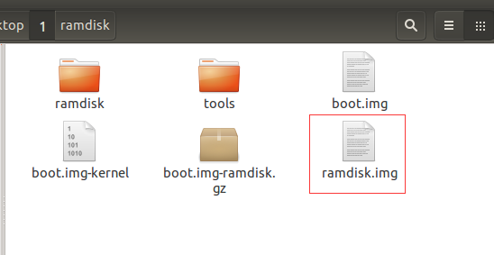

逆向时经常要对APP进行动态调试，一般情况下，Nexus 5是运行在user模式下。为了方便对APP进行动态调试，修改系统镜像里的boot.img，将Nexus 5改为debug模式。
1.修改boot.img的实验条件：
[手机型号]—Nexus 5
[操作环境]—Ubuntu 14.04
[手机系统]—Google官方适用于Nexus 5的Android 5.1.1镜像，镜像下载地址。
工具点我下载，任何版本的系统都是相同的修改方法。
下载需要用到的工具，放到tools下。下载Nexus 5的官方镜像，解压提取到的boot.img放到跟tools同级的目录下。
2.解包boot.img：
赋予所有工具权限：
1 2
| gjm1993@ubuntu:~/Desktop/1$ cd tools/ gjm1993@ubuntu:~/Desktop/1/tools$ chmod 777 *
|
获取boot.img解包的结果参数：
1 2 3 4 5 6 7 8
| gjm1993 BOARD_KERNEL_CMDLINE console=ttyHSL0,115200,n8 androidboot.hardware=hammerhead user_debug=31 maxcpus=2 msm_watchdog_v2.enable=1 BOARD_KERNEL_BASE 00000000 BOARD_NAME BOARD_PAGE_SIZE 2048 BOARD_KERNEL_OFFSET 00008000 BOARD_RAMDISK_OFFSET 02900000 BOARD_TAGS_OFFSET 02700000
|
注意：记下boot.img解包的结果参数，后面重打包boot.img时会用到。
对boot.img进行有效的解包，得到boot.img-kernel和boot.img-ramdisk.gz：
1
| gjm1993@ubuntu:~/Desktop/1$ ./tools/split-bootimg.pl boot.img
|
3.gzip解压boot.img-ramdisk.gz：
解压boot.img-ramdisk.gz：
1 2 3
| gjm1993@ubuntu:~/Desktop/1$ mkdir ramdisk gjm1993@ubuntu:~/Desktop/1$ cd ramdisk gjm1993@ubuntu:~/Desktop/1/ramdisk$ gzip -dc ../boot.img-ramdisk.gz | cpio -i
|
4.修改default.prop
在boot.img-ramdisk.gz解压后释放的ramdisk下，修改default.prop中的ro.debuggable=0为ro.debuggable=1，使修改后的系统运行在debug模式下。为了打开内核root执行adb root，顺便修改default.prop中的ro.secure=1为ro.secure=0，保存退出。
5.使用mkbootfs生成ramdisk.img
生成ramdisk.img：
1
| gjm1993@ubuntu:~/Desktop/1$ ./tools/mkbootfs ./ramdisk | gzip > ramdisk.img
|

6.使用mkbootimg对解包后的boot.img重打包
根据步骤2中执行./tools/unpackbootimg -i boot.img 得到的结果参数，构建重打包boot.img的命令。
执行下面的命令：
1
| gjm1993@ubuntu:~/Desktop/1$ ./tools/mkbootimg --base 0x00000000 --kernel_offset 0x00008000 --ramdisk_offset 0x02900000 --tags_offset 0x02700000 --cmdline 'console=ttyHSL0,115200,n8 androidboot.hardware=hammerhead user_debug=31 maxcpus=2 msm_watchdog_v2.enable=1' --kernel boot.img-kernel --ramdisk ramdisk.img -o newboot.img
|
上面命令的的由来（构建命令时千万不能混入中文空格）：
顺利生成newboot.img：
7.将newboot.img刷入手机
重启手机进入fastboot模式：
将newboot.img刷入手机：
1
| fastboot flash boot newboot.img
|
重启手机：
打开DDMS，效果如下：